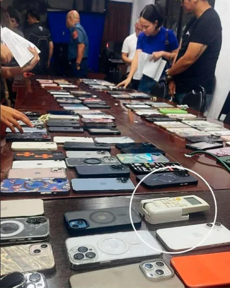
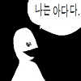

증거물로 압수된 핸드폰들 사이에 억울하게 낀 물건
댓글
띵띤 띠리리링 띠로리로링
나는 핸드폰이 아니다
나는 사실 습도계다

에어컨 리모콘 or 빨래걸이 리모콘 ㅋㅋㅋ
엄마, 저도 드디어 성공해서 핸드폰으로 인정 받았어요, 조금 모자라지만 열심히 노력한 결과에요. 이제 제 삶의 후회도 미련도 없어요. 그동안 감사했어요.
이거 인삼밭에 고구마인가 그거 아님?ㅋㅋㅋ
눈을 떠보니 주위가 전부 핸드폰이다 ㅋㅋㅋ
나는야 핸드폰~ 신나~
너는 리모컨이야 핸드폰이 아니라고
내가... 리모컨 이라고?
나는야 리모콘~ 신나~
ㅋㅋㅋㅋㅋㅋㅋㅋㅋㅋㅋㅋ
너임마 출세한거야
너 임뫄 뭐 또 사고쳤어!
최면 리모컨....
저기 아지트로 쓰던 집 다음 주인은 리모컨 새로 사야겠네
리모컨 안에 칩 달려있는거 아니냐
최면 리모컨 나도 갖고 싶다!!